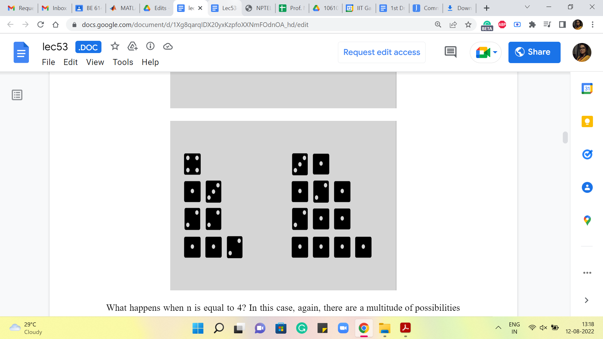
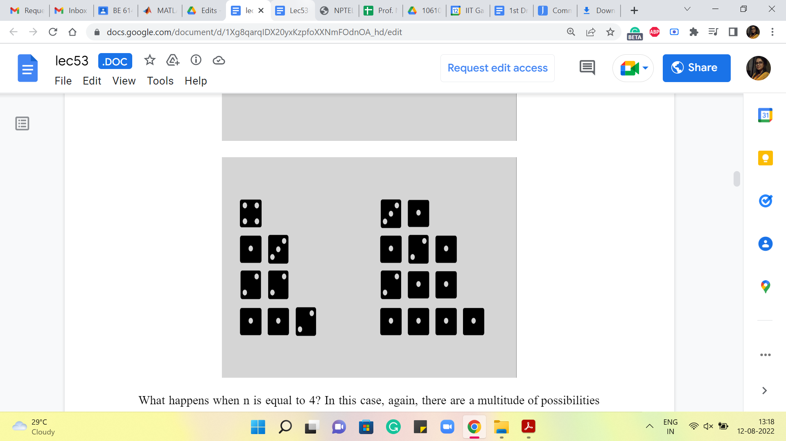
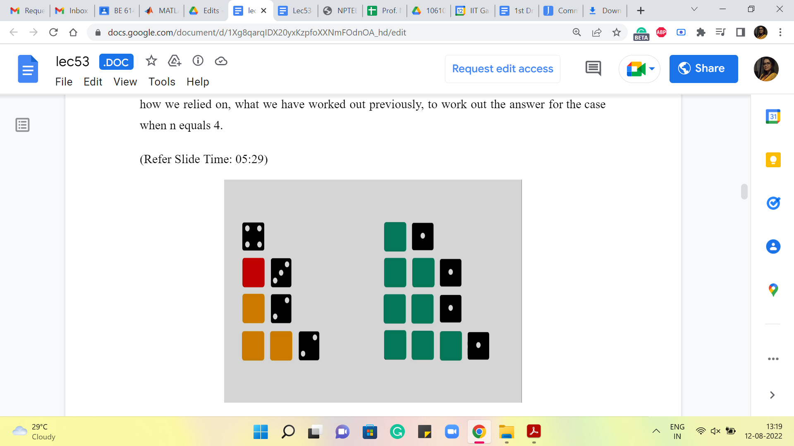
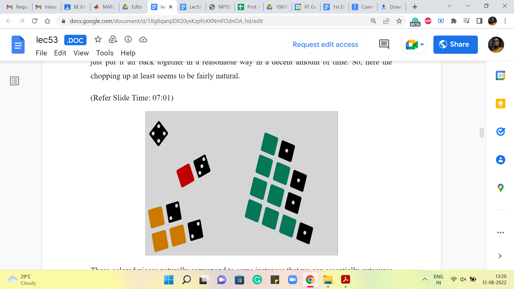
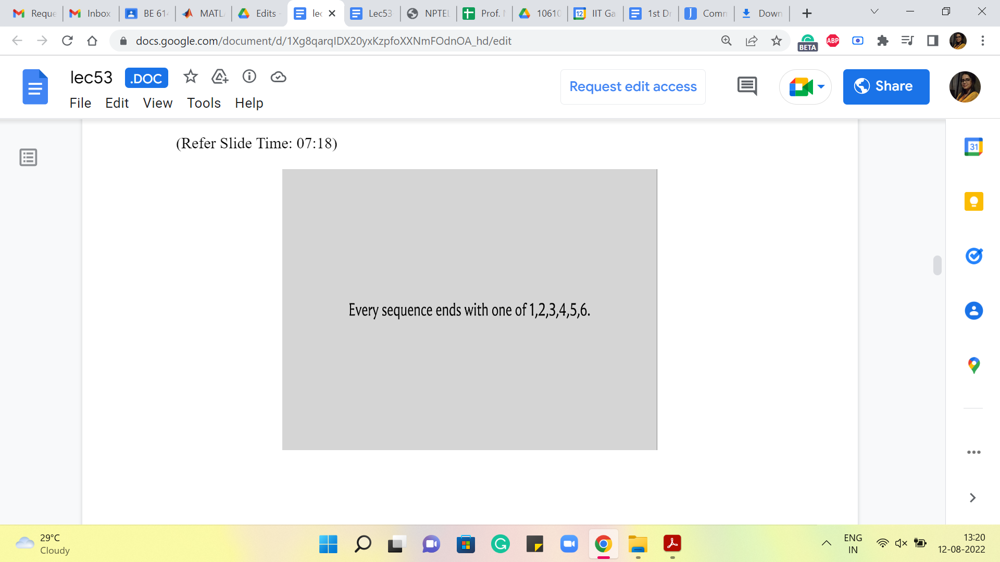
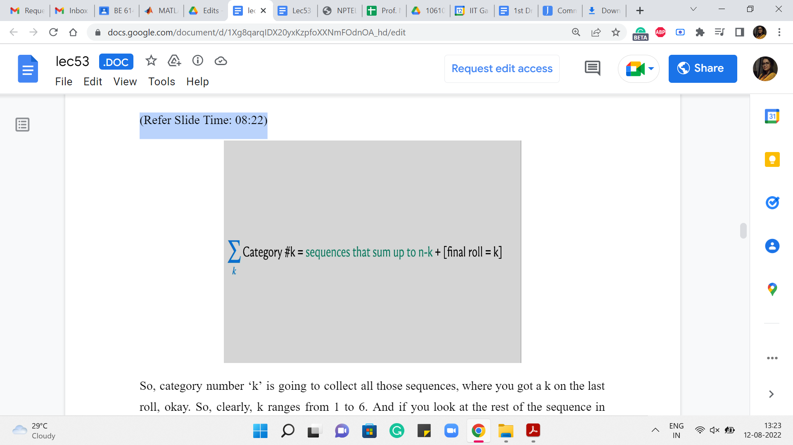
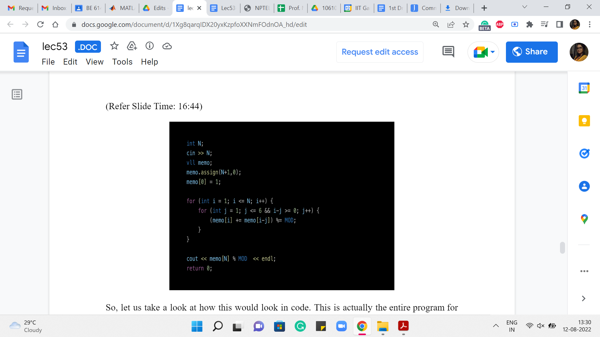
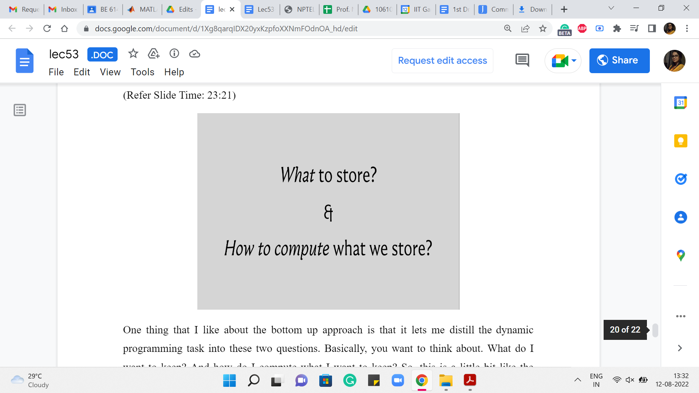

Bottom-Up DP | Dice Combinations (CSES Problem Set)
Lecture - 53
Bottom-Up DP | Dice Combinations (CSES Problem Set)
(Refer Slide Time: 00:50)

Welcome to the second module of the 10th week in Getting Started with Competitive Programming. This week we are getting started with dynamic programming and in the first module, you have seen an introduction to how dynamic programming can be thought of as memoized recursion or clever Brute-Force.
So, in this module, we are going to be doing more of the same with a new problem, except that there will be a small change in the way in which we write up our solution. So, we are going to be using tables instead of recursive functions and this style is sometimes referred to as Bottom-Up Dynamic Programming. So, we are going to get a chance to explore, what that looks like, and contrast it with the top-down approach that we have already seen.
So, for this module, the problem that we will be using is called dice combinations. It is a problem from the excellent CSES problem set, which has about 19 problems under the dynamic programming section. And I definitely encourage you to check out some of the other problems in this set as well and share your thoughts on your experiences with solving them.
I think they are automatically ordered according to the number of people who made successful submissions. So, in some sense, the ordering is a rough indication of an increasing level of difficulty and I think by the time you are done with this week, you should be able to attempt at least the first couple of problems after dice combinations. So, do check that out. In the meantime, let us get started with the question of dice combinations.
(Refer Slide Time: 01:43)

So, this is pretty much the entire problem statement. It says that your task is to count the number of ways in which you can construct a sum n, which is a given number by throwing a dice one or more times. Each throw of the dice produces an outcome between 1 and 6. So, one thing that I think I should say right off the bat is that this is a pure counting question. There are no probabilities involved.
Normally when you think about problems involving throws of dice or coin tosses, you tend to think about chance, and you think about, well, what might happen, what might not happen. So, for example, this question is not asking, what is the probability that a sequence of dice throws adds up to n. That would be a question of chance.
But here we are really just asking, in principle, how many sequences of dice throws there are that add up to a given number n. So, really just, think of it as a pure counting question with no element of chance in it. So, to get used to what we are being asked to do, let us work through a few examples, which is always helpful.
So, what if n = 1? Well, in this case, there is really only one way that a sequence of dice throws could result in a sum of 1. And that is if you rolled it once and it showed up one. So, there is only one way that this can happen.
What about when n = 2? Here there are two possibilities, either you could throw a dice two times and it shows up 1 on both occasions, or you throw it once and it comes up as 2. Both of these sequences are valid and distinct and lead to a sum of 2.
(Refer Slide Time: 02:47, 03:04, 03:24, and 04:27)
n=1  n=2
n=2  n=3
n=3  n=4 
n=4 
What about when n = 3? Well, in this case, there are going to be a few more sequences to account for. Feel free to pause the video here and see if you would like to work this out for yourself and come back and exchange notes. The case when n = 3 is actually also part of the problem statement. So, in case you have seen the problem statement separately, you know the answer to this already. All right.
So, the first thing that you could do is, to roll a dice once and it comes up 3. That is one way that this could happen. The other is that maybe you roll a dice once and it comes up 2, and then the only thing that can happen from there is that the second roll of dice should show up with a 1. On the other hand, maybe the first roll of dice ends up showing a 1, in which case you are left with the task of creating 2. And we know that we can do this in two ways, either by a single roll of two or two rolls of one each. So, altogether, the number of ways in which a sequence of dice rolls could produce the number 3 happens to be 4.
What happens when n = 4? In this case, again, there is a multitude of possibilities, and here are all of them. Hopefully, I have not forgotten anything. And once again, if you go through the process of trying to categorize these nicely, you could think of it as, what happens on the first roll and think of the first roll as being the last dice in each sequence. It is just probably helpful to think of it that way.
So, if the first roll is 4 then there is nothing more to do. If the first roll is 3 then you need to generate 1. 1 is still left and there is only one way to do that. If the first roll is 2 then you still have 2 left to generate and there are two ways of doing that. And if the first roll is a 1 then you are still left with the task of generating 3. And we just saw that there are four ways of doing that. Let me actually highlight some portions so that it becomes visually a bit clearer how we relied on what we have worked out previously to work out the answer for the case when n = 4.
(Refer Slide Time: 05:29)

So, you can see that all the green tiles correspond to ways of generating the number 3 by a sequence of dice rolls. And we kind of appended a 1 at the end to get 4. The yellow tiles represent the number of ways of generating 2. The red tile shows the number of ways of generating 1. And there is, of course, this standalone sequence, which is just directly getting to 4, without having to roll any more throws at all.
So, you might already begin to appreciate how this as a strategy might generalize to the case when you are trying to generate a sum of n. And if you remind yourself about how we worked out the solution to the frog’s problem in the previous module, we said it is useful to split up the solution space into smaller categories that are manageable by recursively-generated answers.
So, remember what we want to do is, see if we can take the space of solutions that we are interested in. In this case, our solution is really the number of these sequences, we want to count how many there are. And we want to take the space and see if we can chop it up into pieces that will then be addressable in some recursive fashion. And then, hopefully, we can just put it all back together in a reasonable way in a decent amount of time. So, here the chopping up at least seems to be fairly natural.
(Refer Slide Time: 07:01, 07:18)
  
These colored pieces naturally correspond to some instances that we can essentially outsource to recursion. And then when we put them back, it is just a matter of adding up all the numbers that we get. So, just to make this categorization a little more explicit as we did before, let us note that every sequence in our solution ends with one of these numbers, 1, 2, 3, 4, 5, 6.
You could think of this as essentially what happened on the last roll of the dice. That is clearly constrained to being one of these six numbers and that leads to a natural categorization of your space into six categories, some of which may be, by the way, empty as we have seen in our example.
So, in particular, if n is 4 then there will be no sequence that ends with a 6. Because once you have rolled a 6 that is a point of no return, there is no way of fixing that, so that the sum becomes four. So, that is just an empty category. It is not something that we have to worry about. It may manifest as a bit of an edge case, depending on your implementation. But we will see that it gets handled naturally in the way that we choose to implement the program later. So, let us take a closer look at this categorization so that the recursive nature of our solution also becomes a little bit more explicit.
(Refer Slide Time: 08:22 and 09:34)
 
So, category number ‘k’ is going to collect all those sequences, where you got a k on the last roll. Okay. So, clearly, k ranges from 1 to 6. And if you look at the rest of the sequence in terms of what is happening apart from the last roll, which is represented by the colored tiles in the previous picture that we were looking at, well, these are all going to be sequences that add up to n-k. And that is easy to reverse engineer because you know that the whole sequence must add up to n because this is a sequence in your solution space.
And right now, the categorization, the case that we are in is telling us that the last roll was already, so we know that the rest of it must add up to n-k. So, what we are interested in is, of course, the total number of sequences. And notice that the number of sequences that generate a sum of n-k is something that we can compute recursively. And once we have done that, the final answer is just going to be the sum of these answers that we obtain from recursion. Okay.
So, to make the recursion a little more explicit, let us write it down this way. So, the number of ways of generating a sum of n by rolls of dice is equal to the number of ways that you can generate n-1 and -2 and so on and so forth all the way up to n-6. Notice that we do need a base case, as we had explained last time. And here, a natural base case to work with is that the number of ways that you can generate a sum of 0 is 1 because the only way to generate 0 is to do nothing, and doing nothing is something that you can think of as the only way to generate a sum of 0.
Now, this may not seem completely satisfactory, but we will see that defining the value of the answer for 0 as 1 will be useful in a very natural way in our recursion. Remember that one case where we said that you can get a 4 by just directly rolling a 4. Well, you can think of that as (being) getting a 4 on the last roll, followed by an empty sequence. And so, when you recurse, you naturally account for this one method of generating a 4 by getting a 4 on the last roll.
Actually, let me write out the case for n = 4 a little bit explicitly because it will help me draw your attention to also some edge cases. So, when n = 4, then n-1, n-2, and n-3 all make sense; n-4 is this mysterious the number of ways in which you can generate 0, but as I said, you can really think of that as generating a 4 on the last roll, and having to do nothing after that. I would really like that to contribute 1 to the sum because that is a perfectly legitimate way of generating a 4.
(Refer Slide Time: 11:23)

After this, things start looking a bit suspect. You have n-5 and n-6, being essentially -1 and -2. And, of course, there is no way that you can generate -1 and -2. So, these numbers are 0. And one question is, how do you want your recursion to handle it?
So, of course, the recursion could say that if n is less than 0, then you return 0. The other way to do it is to just make sure that when you are working with these smaller numbers, notice that this will not be an issue when n is, say, bigger than 6. But for these smaller numbers, you might just want to ensure that you do not even include these terms in your sum.
So, that is an implementation detail, and it is a matter of taste as to how you want to do it. But for now, the main thing to agree on is the recurrence itself and the choice of the base case. So, hopefully going over this explicit example makes it clear as to why we want to say that the number of ways of generating 0 is 1. It kind of aligns nicely with the recurrence that we have just set up for ourselves.
Now, let us talk about the implementation a little bit. Of course, you could implement this just like we implemented the solution to the frog’s problem. So, you could write down a function called ‘solve,’ and it could call itself 6 times, and the answer would be the sum. And once again, you would, of course, want to memoize to avoid the overhead of doing redundant computation. So, that would have been the de-facto top-down style that we have seen so far. But now, let me take you through the bottom-up style instead, which is just a slightly different way of implementing the same solution.
Now, what we are going to do is directly use an array to store the values, and we are going to populate this array going from essentially left to right in the context of this particular example. But more generally, when you have sort of a structure, which reflects all the answers, all the information that your solution wants to store, what you do is you directly populate the base cases.
And then from there, you start working in different parts of the storage, making sure that whenever you are trying to fill up a certain entry in your table, all the entries that it relies on for information, have already been filled up before. So, that was a slightly abstract description. Let us come back and make it concrete in the context of this example.
(Refer Slide Time: 13:47)

So, here, we just need a simple one-dimensional array with n+1 entries to account for the fact that we have an entry corresponding to 0, which is our base case. And we need to go all the way up to n because we are counting the number of ways in which n can be expressed as a sum of dice throws.
So, to begin with, we are going to just make sure that 0 is populated as 1. This is our base case. And then going forward, 1 is going to be equal to 1 again because that is just how the recurrence works out. So, when you look at the number of ways of generating 1, it is the number of ways of generating n-1. And we are going to ignore n-2 and so on because those generate negative numbers and as we said, those are things that we just treat as 0.
Similarly, for 2, we get 1+1, which is 2. For 3, we get 1+1+2, which is 4. For 4, you get 1+1+2 +4 that is 8. For 5, you get the sum of all the numbers that you have seen so far, that is 16. And for 6, you get the sum of all the numbers that you have seen so far again, and that is 32.
For 7 you do not get the sum of all the numbers you have seen so far, but the last six numbers that you have seen so far. So, that is going to be 63. And similarly, for 8, you are going to again get to the sum of the previous 6 numbers, and that adds up to 125. You can verify that these numbers are okay (and) that the addition was done correctly, I hope.
(Refer Slide Time: 15:13)


In general, when you are somewhere in the middle of this array, and you are trying to compute the i’th entry, the way you do that is by basically looking up the previous six entries and simply pushing the sum of all of these numbers to populate the i’th entry. You can just keep going. Okay.
So, essentially, you are doing the work that the recursive algorithm was doing implicitly. You are just carrying it out explicitly through a table and going over it directly. Implementing a bottom-up solution like this requires you to have a good understanding of how exactly the recurrence works. In the sense that you need to be careful about knowing in what order to fill out the table. So, typically for a one-dimensional table, this is not a serious challenge. You would usually just go from left to right.
But on the other hand, if you have a more complicated, say, two-dimensional array or something like this, you have to be careful about ensuring that you fill it up in the right order and that whenever you are filling up a particular entry, the entries that you are appealing to for information have actually been properly populated by the algorithm, and do not carry a garbage value or a default value that you have set up, which is still meaningless in the context of the problem. So, that is something to be aware of. This is worth that you are doing quite explicitly here, as opposed to before, where you could just write the recurrence and be done with it essentially.
(Refer Slide Time: 16:44)

Alright. So, let us take a look at how this would look in code. This is actually the entire program for this problem. And what we have done here, and the only thing I would like to maybe call attention to is the fact that when we are working with small numbers, we add in the small check, which makes sure that we do not get into these negative numbers, which would be either something that causes your program to not work or it leads to bugs.
Because in languages like python, for instance, if you have negative array indices, you would not get a complaint. But what it will probably do is just loop around the array and pick up some values from the end or something weird like that. So, we have a small sanity check that just ensures that when you are working with numbers that are at most six, you do not look up the entries that are not relevant to you.
There are other ways that you can implement these details concerning edge cases. But I found this one to be convenient and that is what we are doing here. You will also see like a ‘mod’ around here, it turns out that these numbers do get pretty large. And it was a requirement in the problem statement to print out the answer modulo a specific number.
So, there is a constant setting that you do not see on your screen right now. But ‘mod’ is essentially 10^9+7 or something like this. So, that is how you would do what is called bottom-up dynamic programming. It is called bottom-up because you start with the base cases, and you literally build the solution quite explicitly with your, if not your own hands, at least with your code, as opposed to just relying on recursion fairy to do all the work for you.
So, why would you use an approach like this? For some people, memoization over recursion seems like a more intuitive and easier approach to code (with). Some people find that the bottom-up method is more somehow transparent and intuitive to look at, and especially if you are doing modifications or optimizations on top of some basic routine, then somehow this is just easier to work with.
So, in terms of what you find more intuitive, I think is a matter of personal taste. I think I know people, who feel differently about this, so this is totally up to you in terms of preference, either of style or over what feels intuitive. As I said, for at least problems that you encounter at an elementary level, there is really no difference in what approach you follow. Having said that, let me make a few slightly more concrete remarks.
(Refer Slide Time: 19:13)

This is just to complete the contrast that I had initiated towards the end of the last module and to basically wrap up that discussion. So, first of all, with bottom-up dynamic programming, you end up typically computing a full DP table, and often you end up actually computing entries that were never used in the computation of the final answer. So, you may end up doing some extra work.
Typically, this difference is again not noticeable for the easier problems, but it may make a difference for more complicated situations. On the other hand, if you are trying to optimize for memory, then it is useful sometimes to work with the bottom-up approach because just easier to do memory optimization here, as opposed to top-down. To give you a simple example of how a memory optimization trick may work, notice that in the dice combinations problem, you only always needed the previous six entries to compute the current one.
Right. You do not need to store the whole table. You can actually do everything that we did, using only a constant amount of space. And the way you can implement this is by just using an array with 6 or maybe 7 entries, one for buffer perhaps, and just continuously overwriting things carefully. Right.
On the other hand, if you wanted to do something like this with the recursive version it is harder because you really do not control how the recursive stack works, you know, as directly. So, that is the sense in which it can be messier to do memory optimization in the top-down approach.
On the other hand, just going back to the first point a little bit, because you are doing things recursively, it is very natural that you only make the function calls that are directly needed for getting to the final answer. Whereas, here you are just blindly following, you know, a way of populating an entire table.
So, typically, you would have, let us say, if it is a 2D table, you typically have a nested loop that just computes all the n times m entries or whatever, whether you need it or not. Right. So, again, this is something that you can optimize for, also in the bottom-up approach. But it is just something that would require extra explicit work from your end, whereas the recursive version handles this naturally.
Again, there are not many problems where this really makes a difference in terms of getting TLE or MLE, as the case may be. But I think it is just nice to know which approaches are more suitable for what kind of optimizations. So, just to recap, the bottom-up approach is more natural when you want to optimize for memory usage. And the top-down approach is more suitable when you want to optimize for time usage, in terms of just making only those function calls that are absolutely necessary.
One final point that I think I have alluded to already, is the fact that when you are doing bottom-up then you are actually explicitly writing out the sequence in which you fill out the table entries. So, typically, the recurrence will already hint or dictate the sequence in which you should be filling out the table entries. But you need to make sure that you understand your recurrence carefully, and there could be subtle errors that creep in, in terms of not getting this sequence right.
So, in one of the assignment problems, you will see how changing the sequence in which you populate a DP table can completely change the semantics of what the DP table is actually computing. So, make sure that you are careful about in what order table entries are being populated.
The example that we just saw, will not really help you appreciate this fully because it is a simple one-dimensional array, and there is a very predictable way in which you want to fill this out. But when you start working with 2D arrays or just more complex structures, over which you do dynamic programming, then these issues will start manifesting a little more. So, that is just something to be aware of and something to keep in mind.
(Refer Slide Time: 23:21)

One thing that I like about the bottom-up approach is that it lets me distill the dynamic programming task into these two questions. Basically, you want to think about. What do I want to keep? And how do I compute what I want to keep? So, this is a little bit like the catchphrase we had last time, where we said dynamic programming is recursion + memoization. But I think, this way of thinking about DP for me has felt a little more concrete.
So, you want to say that okay, the ij’th entry of my table or the k’th entry of my table or whatever represents this value. And you want to ask yourself, okay, if I did compute this for the whole table, is my answer hiding somewhere in the table? Is it one of the entries? Is it the sum of some of the entries? Is it the max of some of the entries? You want to make sure that whatever you decide to store actually leads you to the answer in a meaningful way.
Once you have determined, what you want to store, you want to think about, well, how do I compute whatever it is that I decided my semantics are going to be? And this is the bit, of course, about recursion, about coming up with the right recurrence, identifying what sub-problems will help you solve the current problem at hand. And typically, your thought process for a non-trivial problem may involve a little bit of a back and forth between two questions. You might decide to store something, and then you might realize that, well, okay, this would be nice to store it takes me to the answer but there is not enough meat in this semantics; it does not give me what I want, because I am not able to compute it.
The previous entries are too weak. They do not give me enough information to compute what I want to compute right now. So, then, you go back and change the semantics. You add more masala to it, so to speak, you make it, you strengthen the semantics, and then you come back and try to do the recurrence again.
So, this is a process that you will typically go through before you land up at the right recurrence. With enough practice, you will identify patterns, and some problems will just immediately fall into some pattern that you have seen before. But sometimes you will see a problem that is just going to be a new adventure, and you might have to, sort of, do this back and forth process a little bit before you settle down and actually find the right recurrence.
Another thing worth mentioning is that for many problems, there will be multiple recurrences that make sense and that are all correct. But one would be superior to another in terms of the running time. So, you want to make sure often that you end up at an efficient recurrence, not just anyone that works. So, in one of the examples, we will see how we start off with a natural recurrence that is perfectly valid, but then we try to enhance it and just go to a sparser sort of a table, which can be computed more quickly.
Speaking of optimizations, I should say that there is a whole world of tips, tricks, strategies, and techniques for optimizing DP routines. And there is a lot to be uncovered and discovered here. Unfortunately, we will only get around to barely scratching the surface, and a lot of the advanced techniques are definitely a little bit out of scope for this course. Nonetheless, I think just getting the philosophy right with practice and being able to identify some common patterns will already take you pretty far in the context of solving DP-based problems.
So, to that end, in the next week, we will be looking at a couple of examples just to get the hang of how DP-based solutions work. And in the final week, we will round this off with one example, which is relatively a little more sophisticated than any of the ones that we would have seen before.
So, that is what is coming up, and I am looking forward to sharing these other examples with you in the coming weeks. In the meantime, I hope that you have a chance to look at the AtCoder DP educational problem set, as well as the CSES problem set, and try out a few of the problems that are there. At least the first few, I think, should be eminently doable from where we stop here, in this week. So, thanks so much for tuning in. And I look forward to seeing you back next week. Bye for now!